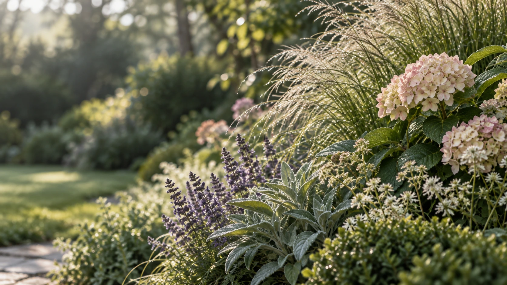
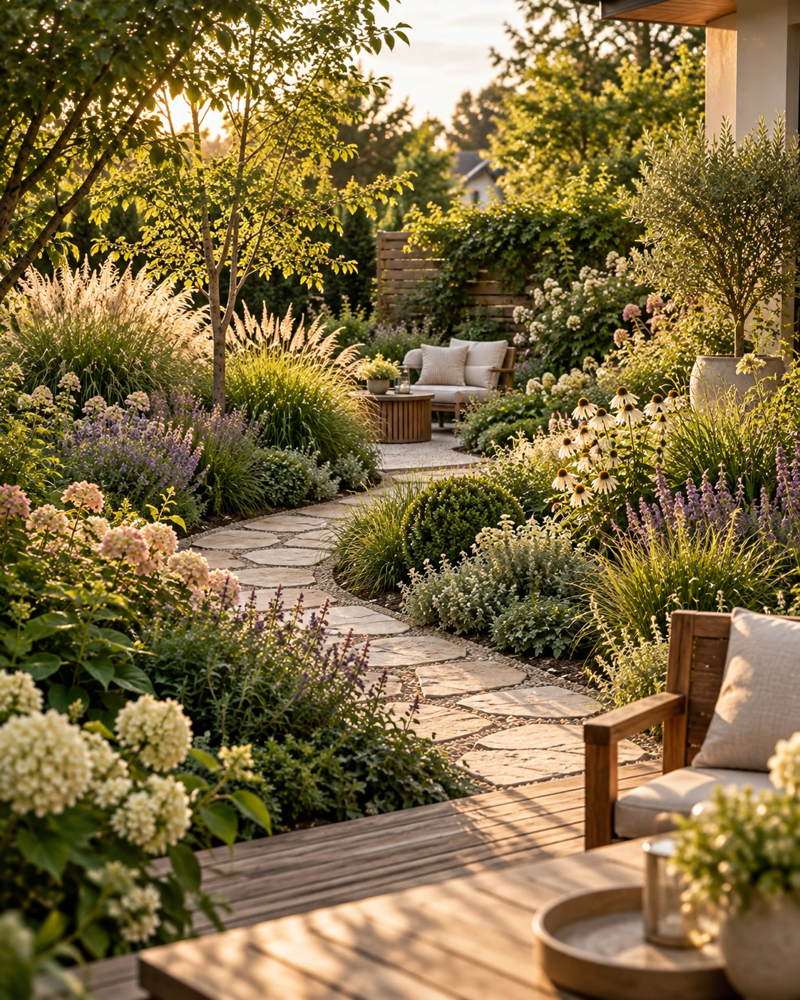
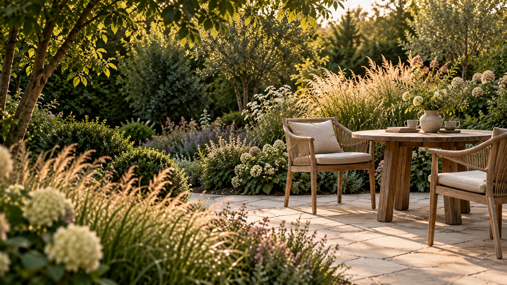

Koncepcja ogrodu
Kolorowy rzut 2D z rozmieszczeniem roślin, małej architektury, utwardzeń i kluczowych elementów aranżacji.

02 EFFKOWE OGRODY / EWA KATRYCZ
Indywidualny projekt ogrodu — od pierwszej rozmowy i koncepcji po przemyślany plan do dalszego działania.

INDYWIDUALNY PROJEKT OGRODU
Masz przed sobą pustą działkę, kończysz budowę domu albo chcesz zmienić istniejący ogród? Być może masz już wiele inspiracji, ale trudno Ci połączyć je w całość. Pomogę Ci nadać tym pomysłom kształt i dopasować je do Twojej przestrzeni.
Projektuję ogrody przydomowe z myślą o codziennym życiu ich właścicieli. Uwzględniam miejsce na odpoczynek, spotkania, zabawę czy uprawę roślin — w proporcjach, które odpowiadają Twoim potrzebom.
Zapytaj o projekt ogrodu
WARUNKI DZIAŁKI I TWOJE POTRZEBY
Rozmawiamy o tym, co podoba Ci się w ogrodach, jak chcesz korzystać ze swojej przestrzeni i ile czasu możesz przeznaczyć na pielęgnację.
Równie ważne są nasłonecznienie, gleba, ukształtowanie terenu, istniejąca roślinność i otoczenie. Biorę pod uwagę architekturę domu oraz widoki z okien, aby ogród tworzył z nim harmonijną całość.
Bliskie są mi bujne rabaty, miękkie linie i kompozycje zmieniające się wraz z porami roku. Projektuję także ogrody minimalistyczne i nowoczesne — dopasowane do konkretnego miejsca i Twoich upodobań.
ZAKRES PROJEKTU
Zakres dokumentacji ustalamy przed rozpoczęciem współpracy. Otrzymujesz ofertę, która jasno określa opracowania dla Twojego ogrodu.
Kolorowy rzut 2D z rozmieszczeniem roślin, małej architektury, utwardzeń i kluczowych elementów aranżacji.
Szczegółowy plan nasadzeń z wymiarami, odległościami i opisami, projekt oświetlenia ogrodowego, utwardzeń oraz opcjonalnie ogrodzenia.
Lista gatunków wraz z ich charakterystyką i wymaganiami oraz wykaz materiałów.
Praktyczny przewodnik, dzięki któremu ogród będzie pięknie się rozwijał.
Wskazówki dotyczące realizacji projektu.
Możliwość konsultacji podczas tworzenia ogrodu na podstawie mojego projektu.
Komplet wizualizacji całego ogrodu, dzięki któremu można zobaczyć, jak ogród będzie wyglądał w przyszłości.
Kompleksowy projekt wraz z zestawieniem materiałów i kosztorysem.
II / WSPÓŁPRACA
Poznaję Twoje potrzeby, sposób życia i warunki działki. Opowiadasz, jak chcesz korzystać ze swojego ogrodu.
Ustalamy zakres współpracy. Porządkujemy pomysły, układ przestrzeni i najważniejsze decyzje.
Opracowuję rozwiązania dopasowane do działki. Omawiamy propozycje i dopracowujemy koncepcję.
Otrzymujesz uzgodnione opracowanie i jasny plan dalszego działania. Możesz skorzystać ze wsparcia podczas realizacji.
Czas i zakres poszczególnych etapów ustalamy indywidualnie.
Umów pierwszą rozmowę ↗Sposób poznania działki i potrzebne pomiary ustalamy indywidualnie. Współpracuję z firmą wykonującą ogrody we Wrocławiu i okolicach — mogę pomóc Ci nawiązać kontakt. Zakres, cenę i termin wykonania ustalisz bezpośrednio z wykonawcą.
Wymaga planu działki, zdjęć i potrzebnych pomiarów. Przed rozpoczęciem pracy ustalamy sposób zebrania informacji i prowadzenia konsultacji, aby projekt uwzględniał rzeczywiste warunki miejsca.
INDYWIDUALNA WYCENA
Każdy ogród wymaga innego zakresu pracy. Cena zależy od powierzchni projektowanej przestrzeni, warunków działki, złożoności rozwiązań oraz zakresu dokumentacji.
Prześlij mi podstawowe informacje o swoim ogrodzie. Pomogą mi przygotować ofertę odpowiadającą Twoim potrzebom.
Zapytaj o projekt ogroduPYTANIA PRZED ZAMÓWIENIEM
Sprawdź, co warto wiedzieć przed rozpoczęciem pracy nad Twoim ogrodem.
Każdy projekt wyceniam indywidualnie. Cena zależy od powierzchni ogrodu, zakresu opracowania i złożoności planowanych rozwiązań. Napisz, gdzie znajduje się działka, jaką powierzchnię chcesz zagospodarować i czego potrzebujesz. Na tej podstawie ustalimy zakres współpracy i przygotuję ofertę.
Zakres ustalamy przed rozpoczęciem współpracy i opisuję go w ofercie. Może obejmować układ funkcjonalny ogrodu, czyli koncepcję ogrodu, wizualizacje, projekt wykonawczy ogrodu, czyli plan nasadzeń z zestawieniem roślin oraz uzgodnione rysunki dotyczące nawierzchni i pozostałych elementów zagospodarowania. Dzięki temu od początku wiesz, jakie materiały otrzymasz i do czego będą Ci służyć.
Warto pomyśleć o ogrodzie już podczas projektowania lub budowy domu, zanim powstaną docelowe nawierzchnie i instalacje zewnętrzne. Pozwala to wcześniej skoordynować ważne rozwiązania. Jeśli dom jest już gotowy albo ogród istnieje od lat, również możemy zaplanować jego urządzenie lub zmianę. Mój kalendarz projektowy zapełnia się z wyprzedzeniem, dlatego najlepiej skontaktuj się ze mną co najmniej 6 miesięcy przed planowanym terminem otrzymania gotowego projektu. Jeśli zależy Ci na wcześniejszym terminie, napisz, sprawdzę aktualną dostępność.
Na początek wystarczą lokalizacja, przybliżona powierzchnia ogrodu, kilka zdjęć i krótki opis Twoich potrzeb. Pomocne będą również plan działki z usytuowaniem domu oraz inspiracje pokazujące, co Ci się podoba. Po ustaleniu zakresu projektu wskażę, jakie dodatkowe materiały i pomiary będą potrzebne.
Tak, możliwa jest również współpraca zdalna. Wymaga ona odpowiednich materiałów o działce, w szczególności planu, zdjęć i potrzebnych pomiarów. Przed rozpoczęciem pracy ustalamy sposób zebrania tych informacji oraz prowadzenia konsultacji, tak aby projekt uwzględniał rzeczywiste warunki miejsca.
Czas zależy od wielkości ogrodu, zakresu dokumentacji oraz przebiegu uzgodnień. Termin rozpoczęcia pracy i orientacyjny harmonogram podaję przy ustalaniu współpracy. Jeśli zależy Ci na urządzeniu ogrodu w konkretnym sezonie, napisz o tym już w pierwszej wiadomości.
Tak, omówienie propozycji jest ważną częścią współpracy. Twoje uwagi pomagają dopasować rozwiązania do tego, jak chcesz korzystać z ogrodu. Nie mam limitu zmian w koncepcji ogrodu, dopracowujemy idealną wersję, która finalnie będzie spełniać Twoje oczekiwania.
Tak, już na początku rozmawiamy o tym, ile czasu chcesz poświęcać ogrodowi. Uwzględniam to przy planowaniu rabat, doborze roślin i rozwiązań ułatwiających pielęgnację. Każdy ogród wymaga opieki, ale przemyślany projekt może ograniczyć ilość pracy i dopasować ją do Twojej codzienności.
Współpracuję z firmą zajmującą się wykonawstwem ogrodów we Wrocławiu i okolicach. Jeśli chcesz powierzyć realizację projektu ekipie wykonawczej, pomogę Ci nawiązać kontakt. Zakres prac, wycenę i termin realizacji ustalisz bezpośrednio z wykonawcą.
KONTAKT
Wyślij kilka zdań o miejscu, etapie inwestycji i zakresie, którego potrzebujesz. Na tej podstawie łatwiej zacząć konkretną rozmowę.